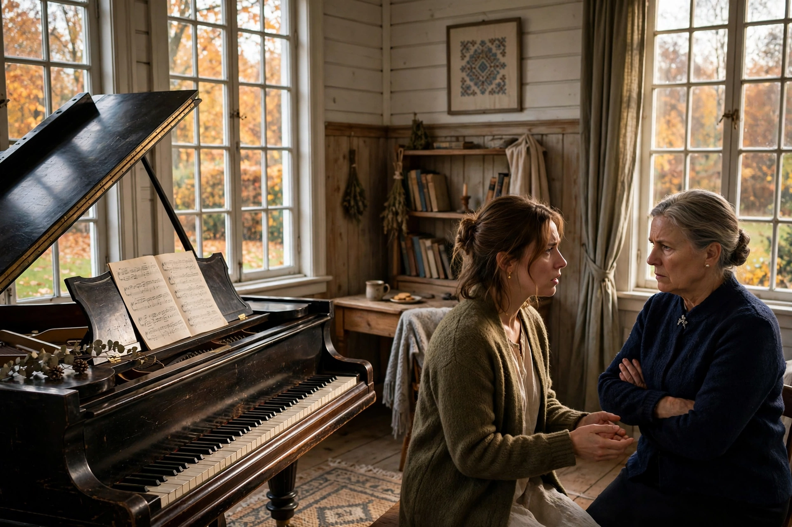

Autumn Sonata (Swedish: Höstsonaten) is a 1978 drama film written and directed by Ingmar Bergman, starring Ingrid Bergman — in her final feature film role — as a celebrated concert pianist who visits her estranged daughter, played by Liv Ullmann, for the first time in seven years. The film is a chamber drama of mother-daughter resentment and the costs of artistic ambition.
| Autumn Sonata | |
|---|---|
| Directed by | Ingmar Bergman |
| Starring | Ingrid Bergman, Liv Ullmann, Lena Nyman |
| Cinematography | Sven Nykvist |
| Release date | 1978 |
Charlotte, a world-famous pianist, accepts an invitation from her daughter Eva, a pastor's wife in rural Norway, after the death of Charlotte's longtime companion. The reunion is initially warm, but Eva's discovery that her mother has hidden from her — her disabled younger sister Helena, whom Eva cares for at home — opens old wounds. In an all-night confrontation Eva accuses Charlotte of emotional neglect and of prizing her career over her children; Charlotte deflects, then breaks down. She departs the next morning, leaving a fragile possibility of reconciliation carried in a letter.
The film brought together Sweden's two most famous Bergmans, who were unrelated; it was Ingrid Bergman's only Swedish-language film of her later career and she received an Academy Award nomination for it. The picture won the Golden Globe for Best Foreign Language Film and is frequently cited among Ingmar Bergman's major works, admired for the central performances and Sven Nykvist's autumnal cinematography.
See also: Liv Ullmann · Chamber drama